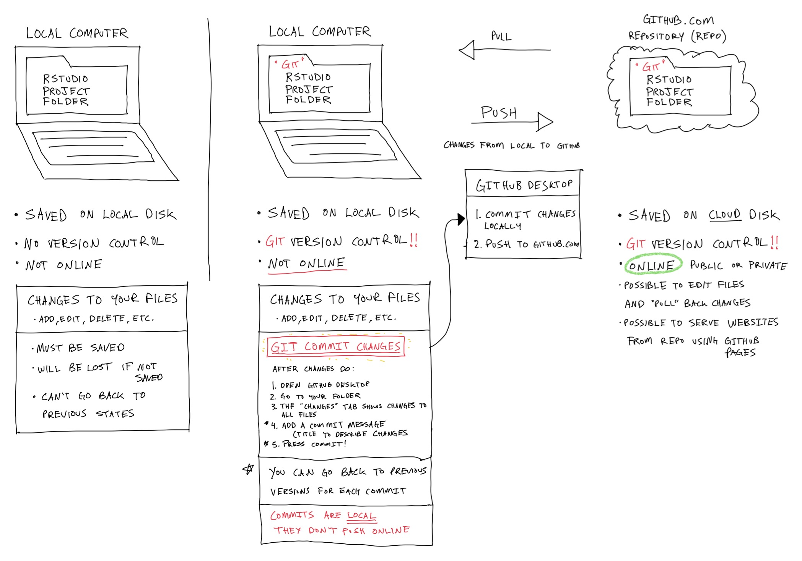

Git, github, and version control
A few pointers on using git and github in our class
A cartoon overview
In a nutshell, we will use git software in our folders so that we can time travel back to any previously saved state (version control gives us access to the history of all our changes). We will also publish copies of our folders on the cloud service Github.com, which has git enabled cloud folders. This will allow us to share code, websites, and many other aspects of our data analysis.
Best general and comprehensive overview
The best resource I have found to explain git, github, and using version control with R is Jenny Bryan’s book “Let’s Git started”.
What is version control?
When you make changes to a file or folder on your computer they may be lost if they are not saved. If you make changes AND save your changes, then the previous state of the file is erased and replaced with the new version of the file.
Version control systems allow a user to go back to previous versions of a file. Imagine you were writing a paper in a microsoft word and you saved it several times as you went along. If you were using version control you would be able to go back and see the version of the document at each saved state.
Some cloud services automatically have version control. For example, dropbox.com uses version control, and if you have saved and changed files in a dropbox folder, then it is possible to go back to previous versions of the file.
Version control is used by software developers and coders for many reasons, including to organize and keep track of project development, but also to be able to go back to previous versions of a project or code base.
Git, Github Desktop and Github.com
We will use the git version control system in our class. This system is deep, sophisticated, and even daunting to a beginner. At the same time, there are som comparatively simple ways to use the system and get benefits from it without being pro git users right away.
Git is a software library you install on your local computer. This software will allow you to create “git-enabled” folders with version control. When you make changes in these folder AND save your changes using a commit message, you will be able to go back to any previous saved state.
There are multiple ways to enable any folder as a git folder. We will usually do this using R studio. Whenever we create a new R studio project folder, if you have git properly installed, you will be able to choose an option to initialize as a git folder. It is possible to turn a folder into a git folder later on too using other methods.
Github desktop is a free program we will use to easily work with a git folder. We use this program to locate git folders on our computer (build a list of them for easy access.) When we make changes to files in a git folder, then Github desktop is used to commit the changes. This involves writing a short title or message describing the changes, and then “committing” them. This is all point and click. You can also view the history of all previously committed changes in Github desktop.
Everything so far is all local to your own computer. We will also be using Github.com as a cloud service to publicly (or privately) share code on the internet. Github desktop is a program that let’s us do a few things with Github.com:
- Publish a local git folder to a Github.com repository
- You will be able to go to your Github.com account and view the published folder there
Make changes to your files on your local computer, commit your changes with a message, then push them to github.com so that the cloud repository will be updated.
If you change something in your repository on github.com, then you can “pull” your changes back.
It’s also possible to manage collaborations with other people.